Exploring Clouds on GCP
Intro
Here is my brief understanding and usage of the sevices provided by the Googles Cloud.
GCP infrastructure:
-
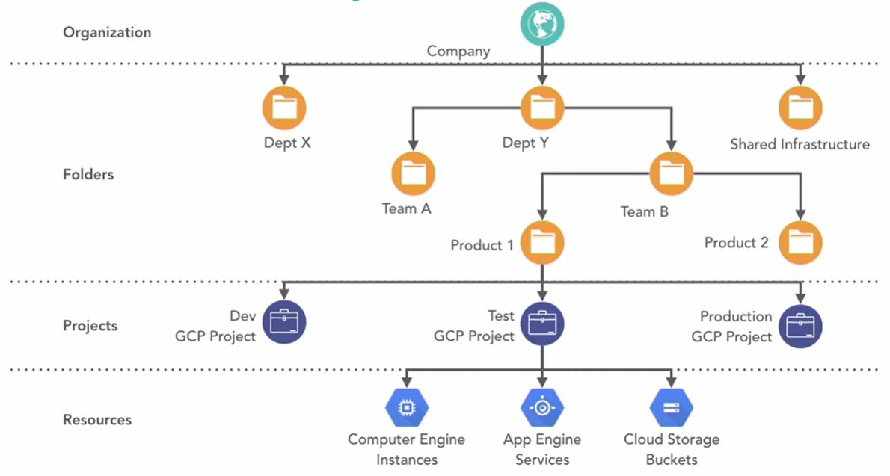source: LinkedIn Learning
- A service we use is called a resource.
- Projects groups resource instances.
- Projects are organized within folders that allows some level of control.
- We are allowed to have one organization per account on top of everything.
Features
App includes following features:
Demo
Cloud Shell:
- It launches a Linux terminal on a Virtual Machine which comes pre-configured with our project's credentials.
- It has also common programming laguange pre-installed like Python, Node, PHP as well as infrastructure tooling like Docker and Kubernetes.
- Gives quick access to GCP resources from withing a browser without having to installing any local terminal.
- It is the best practice to use terminal when going with app to production. Running gcloud scripts allow to do reproducible service configuration and to avoid any miclicks when setting in GCP console.
Cloud SDK
- It is the Google cloud's command line interface tool fot executing commands or making configuration changes to the GCP.
- It starts from a project folder on your local machine.
- Once logged into GCP, terminal asks us to choose a project we want to proceed with in a specific region and zone.
- Besides creating and managing GCP resources it allows us to make scripts and automations.
- There are 3 main GCP SDK CLI tools:
- gsutil for Google Cloud Storage.
- bq for BigQuery.
- gcloud for the rest of Google Cloud services. - Gcloud:
- using commandgcloudwe get all grouped commands available:
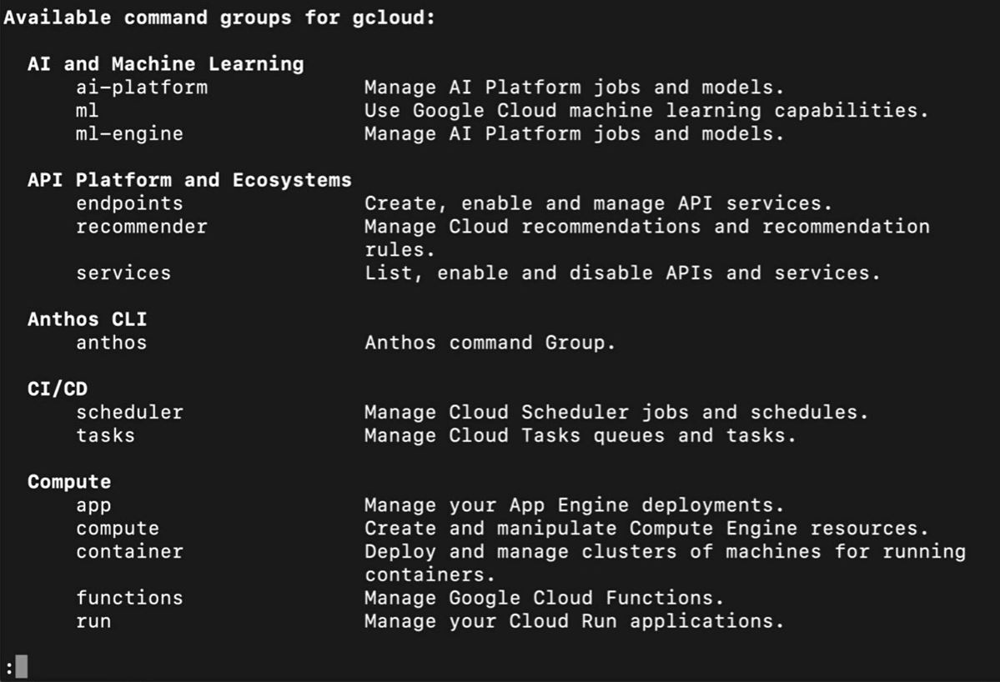
- switching between projects:
gcloud config set project project-name
- listing all compute instances:
gcloud compute instances list
- project initializaiton in current directory:gcloud init {project-name}
Google App Engine:
- It provisions programming technology, librariesa, frameworks, servers and scales app instnaces on demand.
- Deployment:
- getting to the directory where your app is located and running below command:
gcloud app deploy app.yaml
- inapp.yamlwe define runtime e.g.runtime: nodejs10
- once deployment completed, it provides us with a web path of the application. - App Engine components:
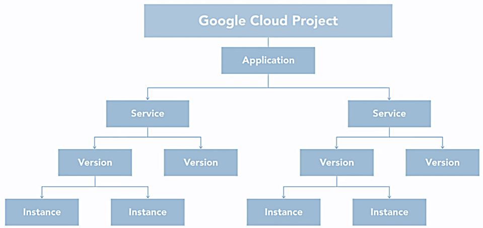
- GCO can only have one Enginge Application,
- when having a large application we can separate logical components into independent services,
- each service can have multiple versions that differs with some functionality of front-end element,
- each version can have multiple instances for scaling capacity to handle traffic on the application. - We can access app's service with url:
https://{service-name}-dot-{project-name}-{region-id}.df.r.appspot.com
BigQuery:
- Enterprise data warehouse that supports SQL queries against various data sources.
- Every time you run the same query, you get the cache of a previous query.
- Every time you upload data into the BigQuery, all data is compressed and encrypted by default.
- When new record is saved, it's split up into data encrypted blocks being distributed among servers inside of data center.
- BigQuery console:
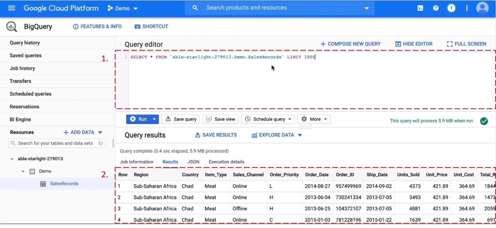
- Section 1 selected shows the SQL query area.
- Section 2 selected shows the data table.
- Data can be uploaded from CSV.
- Schema can be set automatically by the BigQuery.
- We can check the query outcome in JSON format for example.
- Hierarchy: project (main dicionary), dataset (container of data from one specific area), tables/views:
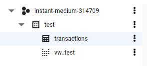
- We can proceed with- data visualization in the Data Studio then. - BigQuery architecture:
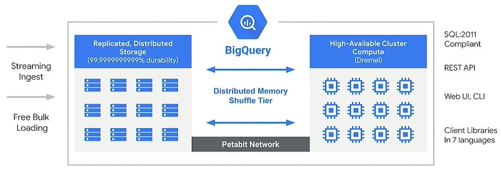source: GCP
- The storage and the computing parts are decoupled.
- It can take stream data or batch data as an input.
- Storage and compute parts are connected with highly performing network.
- We can access BigQuery with GCP console, CLI, by making calls to BigQuery REST API or using client libraries as Java or Python. - BigQuery uses a query execution engine Dremel, which scans billions of data rows in a few seconds. Dremel uses parallel quering to scan data distributed into chunks of 64 megabytes among many computing resources nodes, which are grouped into clusters.
- A tree architecture splitting queries among thousands of computing node ensures high speed performance.
- Columnar storage meaning accessing only relevant fields not paying attention to the other columns.
- Technology integration:
- integration of Google Sheets with BigQuery by JavaScript.
- Data models:
- denormalized:
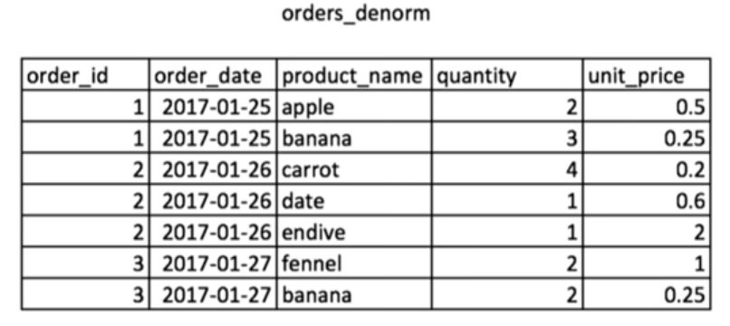
- normalized (snowflake):
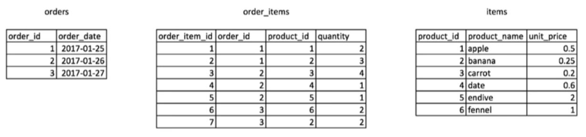
- nested in BigQuery:
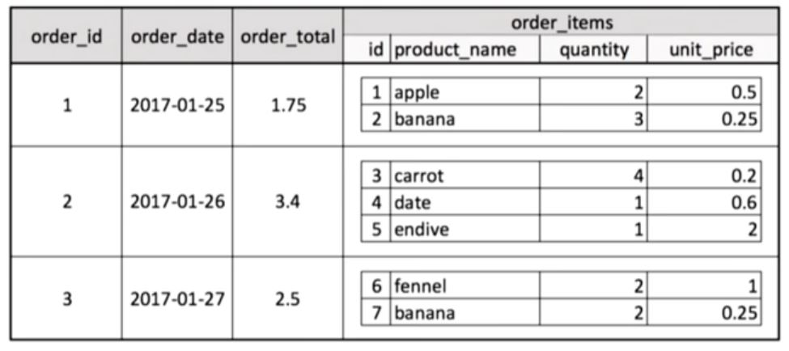 - Nested and Repeated Fields:
SELECT ['apple','plum','pear'] As Items, 'Artur' As Person
- results:
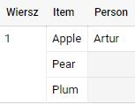
- JSON:
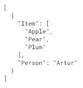 - Unnest functionality:
SELECT Item, Person
FROM UNNEST(['Apple', 'Pear', 'Plum']) As Item
CROSS JOIN (SELECT 'Artur' As Person)
- result:
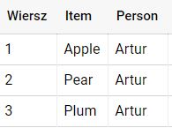
- JSON:
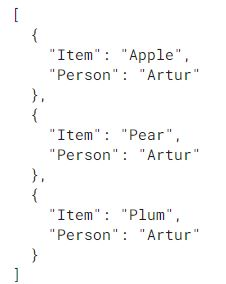
- we keep the array in FROM line as we treat it as if it's a separate table. - Select Array:
SELECT ARRAY(
SELECT 'Apple' AS Item
UNION ALL
SELECT 'Carrot' AS Item
UNION ALL
SELECT 'Water' AS Item)
AS Basket
- result:
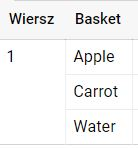 - Select Struct:
SELECT STRUCT(
21 As Age,
'Artur' As Name,
['Apple','Pear','Plum'] As Items)
As Customers
- result:
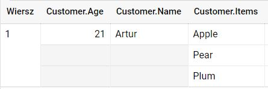
- structs works as a container and can house arrays.
Cloud Storage:
- It's a file storage service for storing and accessing data on Google's infrastructure.
- We can work with Cloud Storage using console on web GCP UI or with gsutil CLI.
- It lets store unstructured data in contaiers called buckets.
- There are 4 storage classes:
- Multi-regional - data accessed frequently aroud the world.
- Regional - data accessed frequently in one place in the world.
- Nearline - data accessed less than once per a month.
- Coldine - data accessed less than once per a year.
Setup
Google Cloud Account creation required.